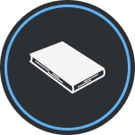

Curriculum vitae

Estudios
- Secundario completo en Santa María Goretti Orientación, bachillerato de CS. Naturales
- Curso Auxiliar de farmacia Instituto MÁS (2016-2017)
- Gestion ambiental urbana en UNLa (2018-2021)
- Cursando Tecnicatura de desarrollo de softwate en UADE (Actualidad)